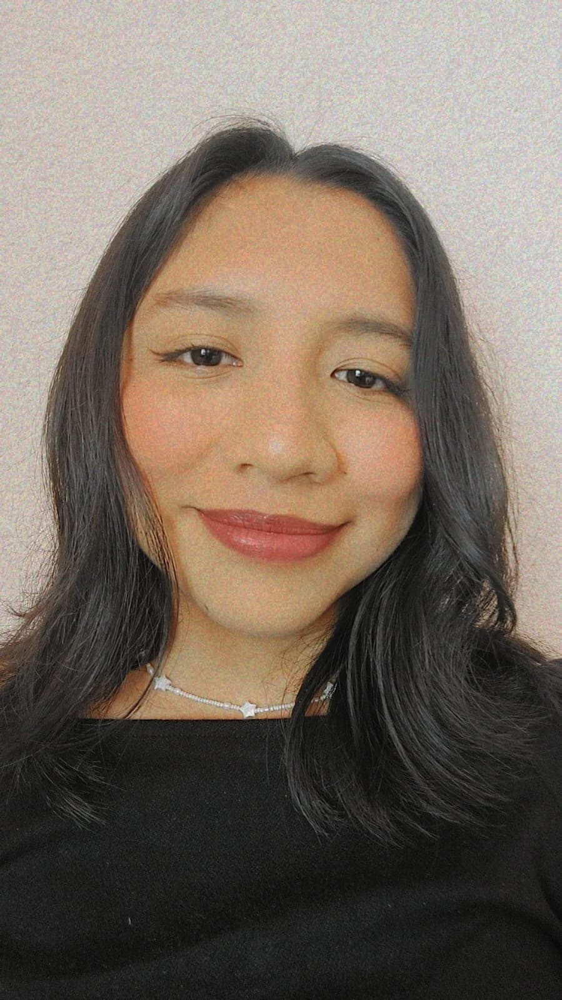

Yolanda del Carmen Paxtián Ponce
Hola, soy Yolanda del Carmen Paxtián Ponce, tengo 22 años, cumplo años cada halloween, estoy estudiando la carrera de Diseño Gráfico, el área que más me gusta es el desarrollo digital y la ilustración, quisiera especializarme en estos ámbitos.
Uno de mis pasatiempos favoritos es jugar videojuegos y dibujar, además de salir a caminar y conocer nuevos lugares.
Soy originaria del estado de Veracruz, pero actualmente estudio en Puebla.